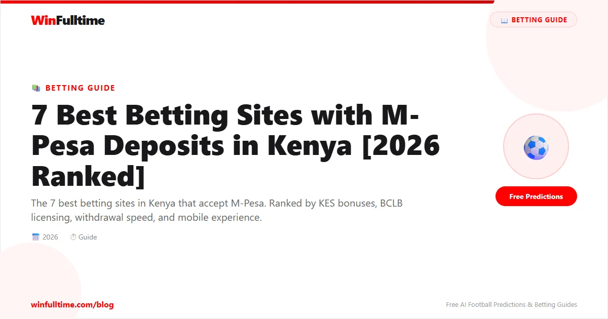

If you bet in Kenya, you almost certainly use M-Pesa. Safaricom's mobile money platform handles over 80% of all betting deposits in the country, and virtually every bookmaker operating in Kenya supports it. But not all M-Pesa betting experiences are the same. Some sites process withdrawals in minutes, while others take days. Some offer KES bonuses worth thousands, while others give you peanuts. We tested 20+ Kenyan betting sites and narrowed it down to the 7 that deliver the best M-Pesa experience.
| Rank | Site | KES Bonus | M-Pesa Deposit | Withdrawal via M-Pesa | BCLB Licensed | Rating |
|---|---|---|---|---|---|---|
| 1 | Betway | Up to KES 5,000 | Instant | 1-12 hours | Yes | 4.8/5 |
| 2 | SportPesa | Up to KES 2,500 | Instant | 2-24 hours | Yes | 4.6/5 |
| 3 | Betika | Up to KES 3,000 | Instant | 1-6 hours | Yes | 4.5/5 |
| 4 | 1xBet | Up to KES 15,000 | Instant | 5-30 mins | International | 4.4/5 |
| 5 | SportyBet | Up to KES 10,000 | Instant | 1-6 hours | Yes | 4.3/5 |
| 6 | bet365 | Bet KES 1,000 get KES 1,000 | Instant | 2-24 hours | International | 4.2/5 |
| 7 | 22Bet | 100% up to KES 25,000 | Instant | 1-12 hours | International | 4.1/5 |
Betway Kenya is the gold standard for M-Pesa betting. Their M-Pesa paybill integration is seamless: deposit via the M-Pesa app on your phone and the funds appear in your Betway account instantly. Withdrawals to M-Pesa typically process within 1-12 hours, and the minimum withdrawal of KES 100 is among the lowest in the market. Betway also offers competitive odds, especially on English Premier League matches, and their welcome bonus of up to KES 5,000 is one of the best for Kenyan bettors.
SportPesa is synonymous with Kenyan betting, and their M-Pesa integration is excellent. Their famous mega jackpots attract hundreds of thousands of Kenyan punters every week, and the M-Pesa deposit process takes seconds. SportPesa's withdrawal times to M-Pesa are reliable but can take up to 24 hours during peak periods. The minimum M-Pesa deposit is KES 50, making it accessible for budget-conscious bettors.
Betika has built a strong reputation among Kenyan bettors for their fast M-Pesa withdrawals. Most withdrawal requests are processed within 1-6 hours, making them one of the fastest payouts in Kenya. Their mobile app is smooth and reliable, their M-Pesa deposit process is instant, and they offer competitive odds on both local and international matches. Betika's welcome bonus of up to KES 3,000 adds to the appeal.
1xBet offers the widest range of betting markets of any site available in Kenya, with over 1,000 markets on major matches. Their M-Pesa deposits are instant via the Send Money option, and withdrawals to M-Pesa can be as fast as 5-30 minutes, which is exceptional. The welcome bonus of up to KES 15,000 is the largest on this list. The trade-off is that 1xBet holds an international licence rather than a BCLB licence, which some Kenyan bettors view as a downside.
SportyBet Kenya offers one of the best mobile betting experiences available, with a slick app that works perfectly with M-Pesa. Deposits are instant via M-Pesa paybill, and withdrawals typically process within 1-6 hours. Their welcome bonus of up to KES 10,000 and regular price boosts make them competitive. SportyBet's BCLB licence gives Kenyan bettors regulatory peace of mind.
bet365 is the global leader in live betting, and their M-Pesa support for Kenyan customers makes them accessible. Their live streaming service lets you watch thousands of matches and bet in real time. M-Pesa deposits are instant, and withdrawals process within 2-24 hours. bet365's offer of"Bet KES 1,000, Get KES 1,000" is straightforward and fair.
22Bet rounds out our list with a massive 100% welcome bonus up to KES 25,000. M-Pesa deposits are instant via paybill, and withdrawals typically process within 1-12 hours. Their minimum deposit of KES 50 makes them accessible to all Kenyan bettors, and they offer a solid range of football markets.
The process is the same across virtually all Kenyan betting sites:
For withdrawals, go to the withdrawal section, select M-Pesa, enter the amount, and the funds will be sent to your registered M-Pesa number.
Generate optimized accumulator combinations from today's AI-powered predictions. Set your target odds and get instant ticket suggestions.
Pro Ticket Builder →